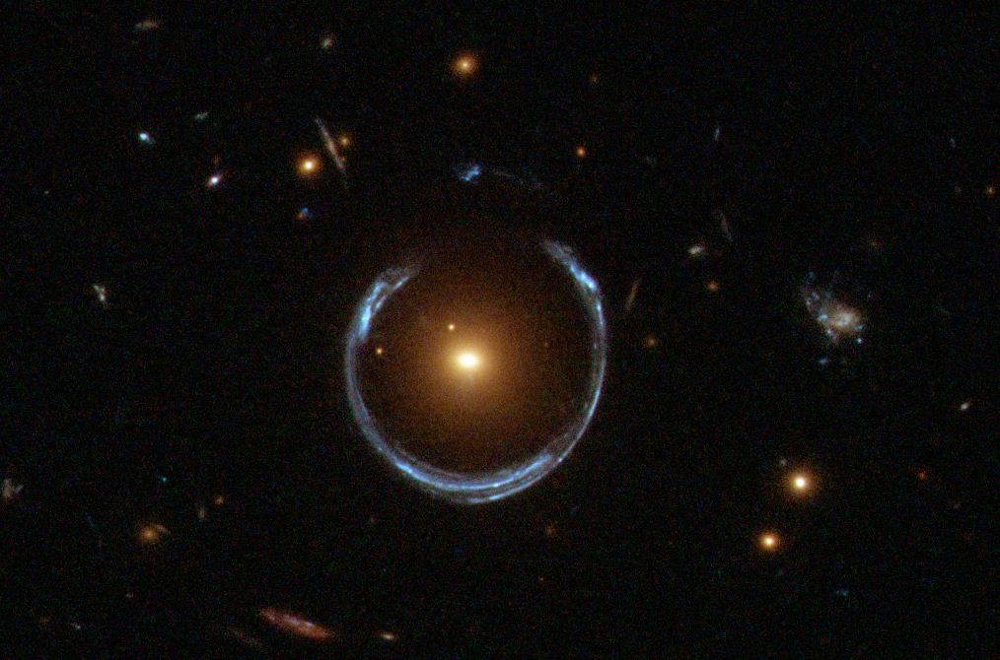

One of the most interesting phenomena in the universe actually helps us study the cosmos in very indirect and fascinating ways. That is, of course, gravitational lensing. This process occurs due to how gravity interacts with matter. According to Einstein’s theory of relativity, spacetime warps around matter. If we look up into the sky with an advanced telescope and observe a massive object, we can see that the light around it is warped. Fun fact: when scientists were testing Einstein’s theories in the early 20th century, a group of researchers went out into the middle of the ocean during an eclipse to see whether light around the Sun behaved like this. And, as you could probably assume, they saw that warping. They needed to go out during an eclipse because the Sun is too bright during the day to casually observe this phenomenon.
Okay, this is cool and all, but how is this useful in any way? Well, I’m glad you asked; there are actually two very common ways in which this phenomenon is utilized, and they both involve exoplanets.
Exoplanets are stupendously less bright than their host star. This makes their detection very difficult because if we just point a telescope into the night sky, the exoplanet’s light will be the equivalent of a firefly in front of a lighthouse. So, how in the world can we use gravitational lensing to rectify this problem? Well, when light is bent around a massive object, the light right behind it gets amplified. So when a host star passes in front of the exoplanet from our point of view on Earth, the exoplanet’s light becomes intensified just enough to the point where we can detect it.
Grouping this with the radial velocity and transit methods—two unique ways of detecting exoplanets—we can get a good idea of what that exoplanet is like. Below, you can see how significant this gravitational microlensing effect is by how a star amplifies light from a galaxy behind it.

Well, that’s a handy dandy way of detecting exoplanets, but what if they don’t have a host star? Gravitational lensing is useful in exoplanet detection because there is a giant honking piece of matter right next to it that can be millions to even billions of times larger. However, rogue planet detection is not at a loss. As a matter of fact, gravitational lensing can be used even in these scenarios. In 99.99% of cases, rogue planets are unimaginably far from any other piece of matter. But when a massive object passes in front of our view, the exoplanet becomes visible, allowing us to observe and study it. The massive object, as the name suggests, acts like a lens.
This occurrence is incredibly rare, but we’re in luck: the cosmos is enormous; it’s so large that these types of events occur far more frequently than one might expect. As a result, the number of detected rogue exoplanets has been increasing.
As we wait for gravitational lensing to be used in many more groundbreaking ways, stay curious and exosolar.